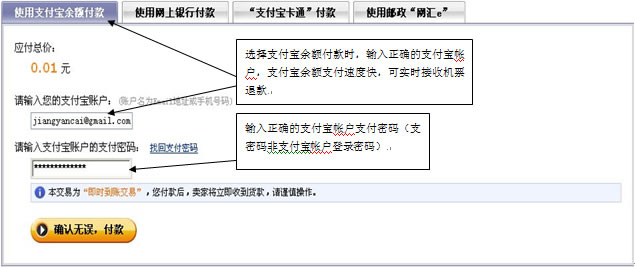
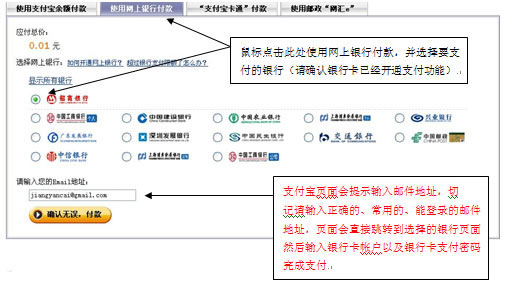
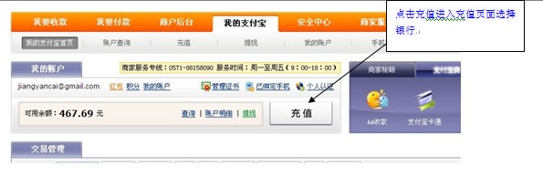
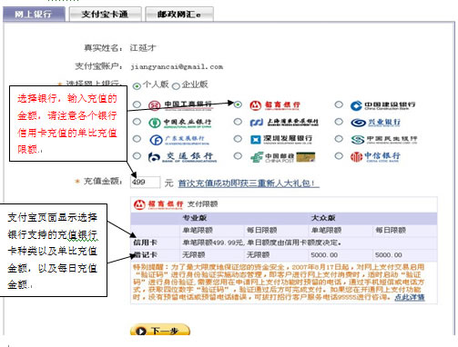
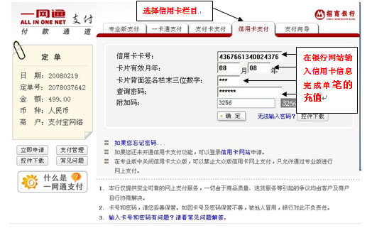

一
支付宝支持的支付方式：
1、支付宝余额付款（支付宝帐户内资金付款）
2、网上银行付款（直接使用支付宝支持的12家全国性银行的网上银行在支付宝接口进行支付）
3、支付宝卡通付款（开通支付宝卡通的用户可以使用）
支付页面：
二
支付宝支持的各个方式使用演示：
1、如何使用支付宝余额进行支付：支付步骤确认支付宝帐户有足够支付的金额，如果支付宝帐户内没有资金可以登录支付宝帐户进行“充值”，充值方式参考以下流程
http://club.alipay.com/yy/club/jc/trade_flash/2/4-chongz/1-wsyh/wsyh1.html
使用支付宝余额付款页面：

一、进入支付宝支付页面选择网上银行付款

1.
在选择网上银行支付时如果输入的邮件地址是曾经注册过的支付宝帐户，那么支付宝会提示输入支付宝帐户的支付密码，然后跳转到选择的网上银行，此过程相当于通过支付宝帐户进行支付，在完成支付后登录支付宝帐户可以看到交易的明细，出票方如果退款会直接退回支付宝帐户
1、为了方便机票采购以及接口机票退款，请各位采购商注册支付宝帐户，以便在购买机票时使用支付宝记录交易的订单以及接收出票方的退款。
2、支付宝帐户的注册流程：
支付宝帐户注册流程，请点击以下链接按照以流程登录支付宝网站：http://www.alipay.com/进行注册。
http://club.alipay.com/yy/club/jc/trade_flash/1/1-zhuce/zhuce1_1.html
1.在机票平台订票会后进行支付时建议通过支付宝帐户进行支付，好处是在采购商申请退票以后，供应商操作完退款，机票款会实时退回到支付宝帐户，马上就可以收到退款，收到退款以后可在下次购买机票时使用：使用帐户内资金购买机票。如果不想使用此资金购买机票，那么可以在支付宝帐户申请实名认证（请参考个人支付宝帐户认证流程），认证完成以后通过支付宝提现到个人的银行帐户上。
2.如果在平台订票以后，选择支付宝接口支付时，直接选择网上银行支付时没有输入支付宝帐户以及支付宝支付密码，随意输入一个邮件地址且这个邮件没有没有注册过支付宝帐户，出票方在退款以后会直接退回到支付银行卡，时间为2天的时间（不支持农业银行银行卡退款）
一
、把支付宝帐户内资金转移到银行卡上前提是一定要通过支付宝实名认证，实名认证流程请参考以上认证流程进行操作
二、实名认证通过以后把支付宝帐户资金转移到银行帐户，这个过程称为：提现
提现规则为：
1、企业类型支付宝帐户只能提现到注册公司的企业银行账户上。不能提现到个人的银行卡上
2
、个人支付宝帐户提现时需要设置与支付宝注册人一致名称的个人银行卡帐户，帐户设置以优先。工商银行、招商银行、建设银行等大的银行为主。
支付宝提现流程为：
http://club.alipay.com/yy/club/jc/trade_flash/1/8-tqzj/tqzj1_1.html
为了提高帐户安全以及把支付宝帐户内资金转移到银行帐户需要安装支付宝的数字证书，安装的流程：
http://club.alipay.com/yy/club/jc/trade_flash/1/6-sqszzs/1-sqzs/sqszzs1_1.html
查询支付宝帐户资金方法 http://club.alipay.com/yy/club/jc/trade_flash/2/4-chongz/4-zhcx/2-yemxcx/yemxcy1.html
备注：使用信用卡充值以后不能直接提现，否则资金会被冻结在支付宝帐户内。
1.充值页面：

2.选择充值银行和输入充值金额：

3.点击下一步进入银行页面，选择信用卡输入信用卡信息，点击确认完成充值：

支付宝帮助汇总：如果上诉帮助仍不能解决，请在以下链接进行搜索答案也可以拨打支付宝服务电话：例如，登录密码丢失等问题。
http://help.alipay.com/support/index.htm